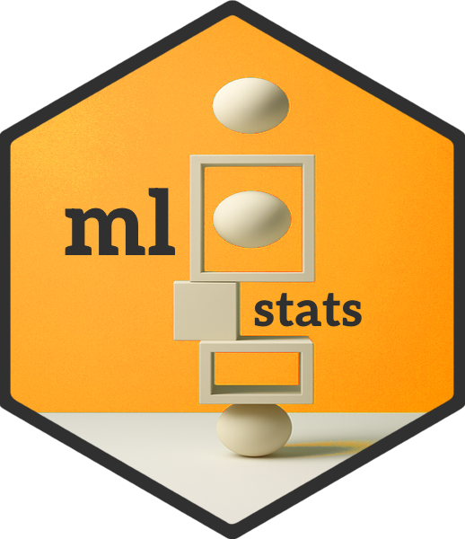

Within- and Between-Group Correlation Methods
Source:vignettes/correlation-methods.Rmd
correlation-methods.RmdThis vignette documents, in more detail, how
within_between_correlations() (and, through it,
mldesc()) estimates within-group and between-group
correlations and tests them for significance, and how to decide which
method and settings are appropriate for a given data set. It assumes you
are already familiar with the basic idea of within-group and
between-group relationships; see the “Getting Started” vignette for an
introduction.
Three methods are available via the method argument:
"decomposition" (the default), "sem", and
"bayes".
The decomposition method
method = "decomposition" (the default) follows the
variance-decomposition approach described by Pedhazur (1997, ch. 16,
p. 679). For a variable
observed for individual
in group
,
the total sum of squares can be split into a between-group and a
within-group part:
where is the mean of group and is the grand mean. The same decomposition applies to the sum of cross-products of two variables and . From these between- and within-group sums of squares and cross-products, two correlations can be computed:
- The within-group correlation () is the correlation between the group-mean-centered deviation scores, and . It describes how and relate to each other inside groups, after removing all between-group differences.
- The between-group correlation () is the correlation between the group means, and . It describes how groups that score higher on tend to score on .
Weighted vs. unweighted between-group correlations
Pedhazur’s between-group sum of cross-products (eq. 16.5, p. 680)
weights each group’s contribution by its size,
.
within_between_correlations() reproduces this when
weight = TRUE (the default): the between-group correlation
is computed on the group means after replicating each one once per
observation in that group, which is mathematically equivalent to a
sample-size-weighted correlation of the group means. With
weight = FALSE, every group counts once, regardless of
size.
For balanced data (equal group sizes), the two give identical
results. For unbalanced data, Snijders and Bosker (2012, sec. 3.6.2)
recommend weighting the between-group correlation by
specifically to recover the right population-level estimate, so
weight = TRUE is the better default for the point
estimate when group sizes differ. (See “Choosing a method” below
for why this does not change how the correlation is tested for
significance.)
Significance testing
Within-group correlation. Centering each variable on its group mean is mathematically equivalent to controlling for group membership, represented as dummy variables, in a regression of on . Pedhazur (1997, p. 182) notes the general principle that “testing the significance of a partial correlation coefficient is tantamount to testing the significance of the semipartial correlation, or the regression coefficient, corresponding to it” — and the significance test for a regression coefficient depends on the model’s residual degrees of freedom. Snijders and Bosker (2012, sec. 6.1) give the relevant rule for a level-one coefficient estimated alongside other predictors in the fixed part of the model: , where is the total number of level-one observations. Substituting (total observations) and (the group dummies, plus the slope of interest itself) gives the degrees of freedom used for the within-group correlation test:
Between-group correlation. The between-group
correlation is tested as an ordinary correlation among the
group means, with
.
This holds regardless of weight: weighting the point
estimate by group size changes how much influence each group has on the
estimate, but it does not change the number of independently
observed groups the data provide. Because of this, the significance test
always uses the unweighted correlation of the group means, even when
weight = TRUE and the displayed estimate is the
size-weighted version. (Without this adjustment, the test of a
size-weighted estimate can substantially overstate precision when group
sizes are very unequal, treating data dominated by a few large groups as
if it carried as much information as many similarly sized ones
would.)
The SEM method
method = "sem" fits a two-level structural equation
model using lavaan::sem(), with the grouping variable as
the cluster variable. Rather than decomposing observed scores and
correlating the resulting deviation scores and group means, this method
estimates the within-group and between-group covariance matrices
directly and simultaneously, using robust maximum likelihood (MLR; Hox,
Moerbeek, & van de Schoot, 2018, ch. 14, sec. 14.3). The
standardized solution provides the within- and between-group
correlations, and significance is based on the resulting z-tests.
Because MLR estimation incorporates each group’s sample size into the
likelihood automatically, there is no separate weight
argument for this method: unequal group sizes are handled natively by
the estimation procedure itself, rather than by an explicit weighting
choice. Missing data are handled by listwise deletion (cases with any
missing value on the modeled variables are excluded before
estimation).
Variables that never vary within a group (e.g., a stable trait
measured once per person but attached to every observation) cannot
contribute to a within-group covariance and are modeled only at the
between-group level; variables with an intraclass correlation near zero
are modeled only at the within-group level. Correlations that cannot be
estimated at a given level are reported as NA.
The Bayesian method
method = "bayes" mirrors
method = "decomposition" conceptually — the within-group
correlation is estimated from group-mean-centered deviation scores, and
the between-group correlation from group means — but estimates both via
Bayesian multivariate models fit with brms::brm() (Bürkner,
2017) instead of closed-form formulas. Rather than a point estimate and
a p-value, each correlation is reported as a posterior median together
with a credible interval (CI): a correlation is starred when its CI
excludes zero. This requires the brms package, which is
not installed with mlstats by default.
The weight argument works as it does under
method = "decomposition": with weight = TRUE
(default), the between-group point estimate comes from a model fit on
group means replicated once per observation in that group (implicitly
weighting by group size). Unlike the point estimate, the credible
interval is always computed from a model fit on unique group means only,
so that uncertainty reflects the actual number of groups rather than the
total sample size — mirroring how the decomposition method’s
significance test always uses the unweighted group means (see above).
With weight = FALSE, both the point estimate and the CI
come from the unweighted model. The width of the credible interval is
controlled by the ci argument (default 0.9, a
90% CI).
Choosing a method
| decomposition | sem | bayes | |
|---|---|---|---|
| Speed | Fast; closed-form | Slower; iterative MLR estimation | Slowest; MCMC sampling |
| Balanced group sizes | Works well | Works well | Works well |
| Very unequal group sizes |
weight = TRUE corrects the point estimate;
significance test always uses unweighted group means (see above) |
Handled natively by ML for both point estimate and significance test |
weight = TRUE corrects the point estimate; CI always
uses unweighted group means (see above) |
| Missing data | Pairwise deletion per variable pair | Listwise deletion across all modeled variables | Pairwise deletion per variable pair |
| Small number of groups | Significance tests are exact | Asymptotic MLR standard errors; can be unreliable with few groups | Posteriors do not rely on asymptotic or bivariate-normal assumptions |
| Uncertainty | p-values | p-values (z-tests) | Credible intervals |
| Interpretability | Simple, transparent formulas | Estimates come from a fitted latent-variable model | Estimates come from a fitted Bayesian model |
As a starting point: use method = "decomposition" (the
default) for most applications, particularly when group sizes are
reasonably similar or the number of groups is small. Consider
method = "sem" when group sizes are very unequal and you
want the significance tests — not just the point estimate — to fully
account for that imbalance. Consider method = "bayes" when
the number of groups is small and you want credible intervals instead of
p-values, and are willing to accept longer computation times.
References
Bürkner, P.-C. (2017). brms: An R package for Bayesian multilevel models using Stan. Journal of Statistical Software, 80(1), 1–28. https://doi.org/10.18637/jss.v080.i01
Hox, J., Moerbeek, M., & van de Schoot, R. (2018). Multilevel analysis: Techniques and applications (3rd ed.). Routledge.
Pedhazur, E. J. (1997). Multiple regression in behavioral research: Explanation and prediction. Harcourt Brace.
Snijders, T. A. B., & Bosker, R. J. (2012). Multilevel analysis: An introduction to basic and advanced multilevel modeling (2nd ed.). Sage Publishers.